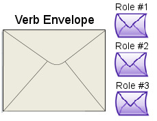
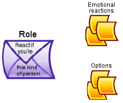
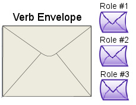
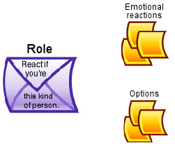

SWAT TUTORIAL
Engine Cycle Overview
Engine Cycle Overview
A story is a sequence of events. In Storytronics, an Event always includes a Verb. When the story engine encounters an Event, it hands an imaginary envelope (the Verb) to each of the Actors in turn:
The envelope contains a group of Roles for who can respond and how they respond:
Each Role specifies:
Each Actor considers that Role and, if that Actor meets the conditions defined on the Role envelope, then that Actor executes the Role, opening up its envelope to see the Options inside.
Each Option specifies:
In turn, each witnessing Actor considers the list of Roles and assumes one of them if appropriate. An Actor assuming a Role becomes the “ReactingActor” for the subsequent Role calculations.
Within that Role, a ReactingActor chooses the Option for which s/he has the highest Inclination. That chosen Option becomes a Plan.
Plans are later executed by the Engine, becoming Events.
The cycle begins again.
Many complications, but this is the basic idea.
As you can see, one Event can be pretty complicated in terms of all the decisions to be made by the story engine. Fortunately for the player, most of that is invisible. For you, the author, your job is to define the possible Roles, reactions, and Options for the Actors that will be triggered by the Verb. The Verb Editor is the tool that will help you build all of this.
The envelope contains a group of Roles for who can respond and how they respond:
Each Role specifies:
- the conditions under which an Actor may assume that Role
- the emotional reactions of an Actor taking that Role
- a group of Options for that Actor for reacting to the Event
Each Actor considers that Role and, if that Actor meets the conditions defined on the Role envelope, then that Actor executes the Role, opening up its envelope to see the Options inside.
Each Option specifies:
- which WordSockets will be used construct the sentence for that Option
- the rules for what words will be chosen to fill those WordSockets
- the Inclination of the Actor towards executing that Option
In turn, each witnessing Actor considers the list of Roles and assumes one of them if appropriate. An Actor assuming a Role becomes the “ReactingActor” for the subsequent Role calculations.
Within that Role, a ReactingActor chooses the Option for which s/he has the highest Inclination. That chosen Option becomes a Plan.
Plans are later executed by the Engine, becoming Events.
The cycle begins again.
Many complications, but this is the basic idea.
As you can see, one Event can be pretty complicated in terms of all the decisions to be made by the story engine. Fortunately for the player, most of that is invisible. For you, the author, your job is to define the possible Roles, reactions, and Options for the Actors that will be triggered by the Verb. The Verb Editor is the tool that will help you build all of this.